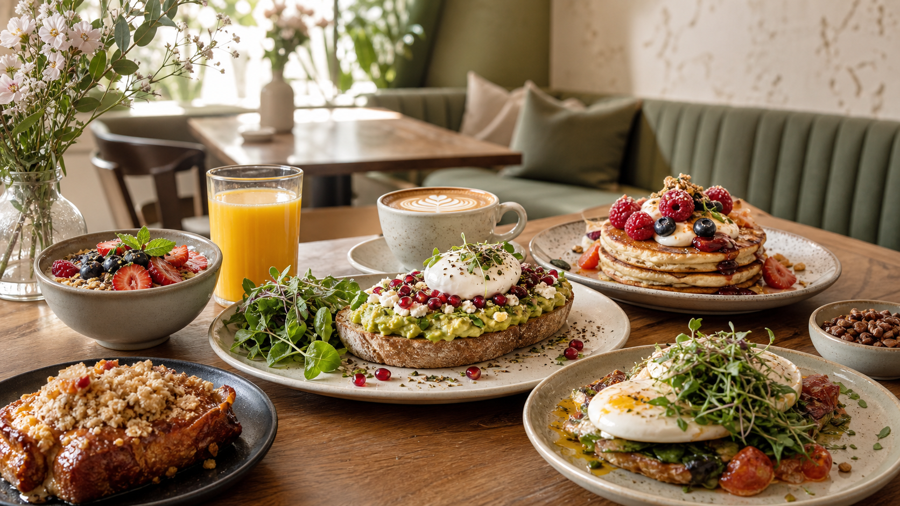
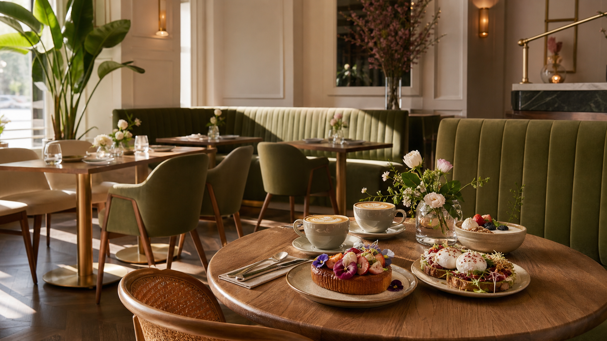

Bulle · Coffee · Brunch · Apéritif
Projet Café Brunch.
L’adresse lumineuse pour un brunch généreux, un café parfaitement servi et ces moments que l’on prolonge volontiers.
Pourquoi venir
Parce qu’un bon brunch doit avoir le goût d’une vraie parenthèse.
Chez Projet, on vient pour les assiettes généreuses, les boissons soignées et cette lumière qui donne envie de rester un peu plus longtemps.

Brunchs généreux Cafés & drinks
Cafés & drinks
La promesse
Une table qui donne envie de rester.
Une carte travaillée sans être compliquée: avocado toast, brioche royale, pancakes, shakshuka, matcha latte, cocktails et vins choisis avec soin.
Voir la sélection de vinsAvocado toast
Brioche royale
Matcha latte
Spritz
Vins suisses